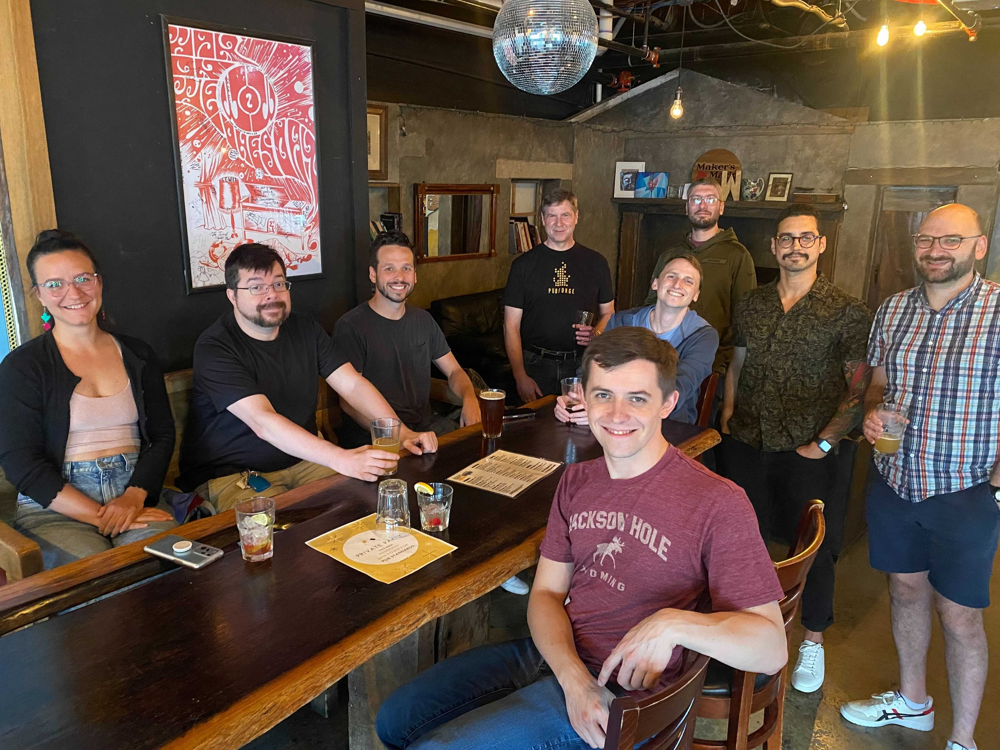

The second Thursday of every month, 6:00pm onwards.
Pub Standards Lancaster is a monthly meetup of developers, designers, founders and people-who-like-to-build-stuff in central Pennsylvania.
Pub Standards is open to everyone. It's loosely aimed at web design & development geeks, but that doesn't mean chitchat need necessarily be work-related. Don't expect structure, don't expect presentations, just relax with likeminded people and a few beers.
Yes! Typically Pub Standards has between 8-16 people who attend. We usually coordinate using a combination of our monthly email list, Slack group, and Meetup.com.

Tellus360 on the first block of East King. Come up the stairs to the second floor and turn the corner - we'll be across from the bar at the community table (see above picture!). If the weather is great we'll migrate up to the roof deck.
Street parking is free after 6pm and there is usually plenty of it on Duke St between Orange and Vine (see purple section on map).
If you don't want to street park, Penn Square Garage is located directly behind Tellus 360 (about $2/hr), with the entrance around the corner on Duke St. If you have a big truck there's also an open air lot across from the Ware Center on the 100 block North Prince.